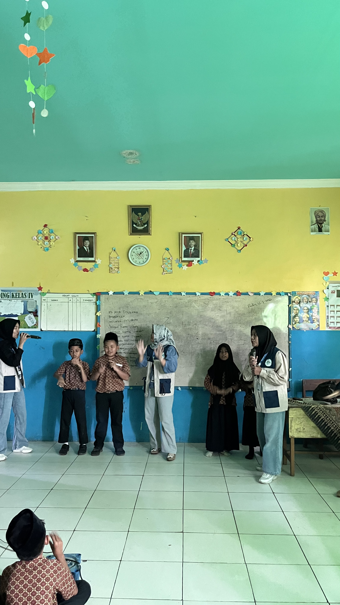
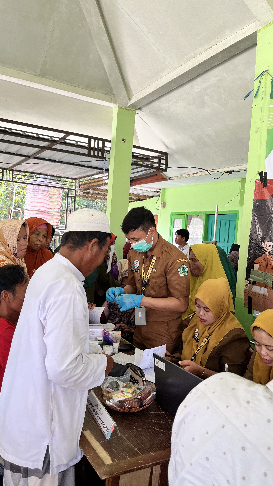
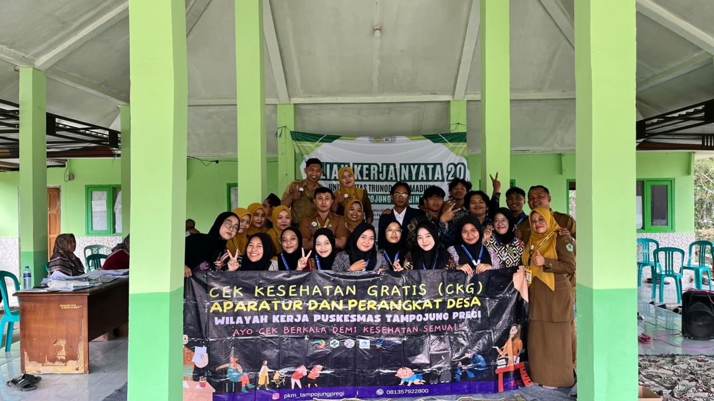
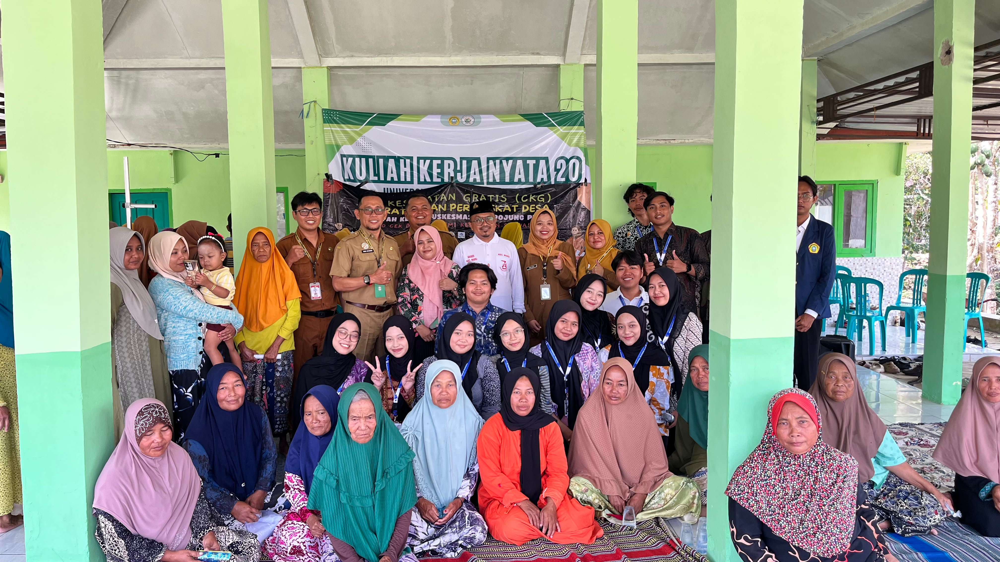

Video Profil Desa
Galeri Foto
Kegiatan KKN

Kegiatan Mengajar

Pembuatan Pupuk Organik

Cek Kesehatan Gratis
Suasana Desa

Pemandangan Desa

Aktivitas Petani Tembakau

Puskesmas Tampojung Tenggina
Kegiatan Masyarakat

Pendekatan Bersama Warga

Kegiatan Pendidikan SMP

Fasilitas Kesehatan Desa